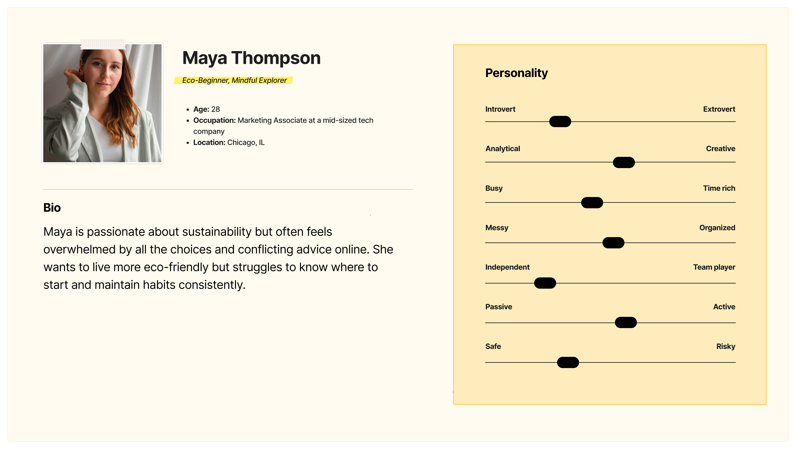
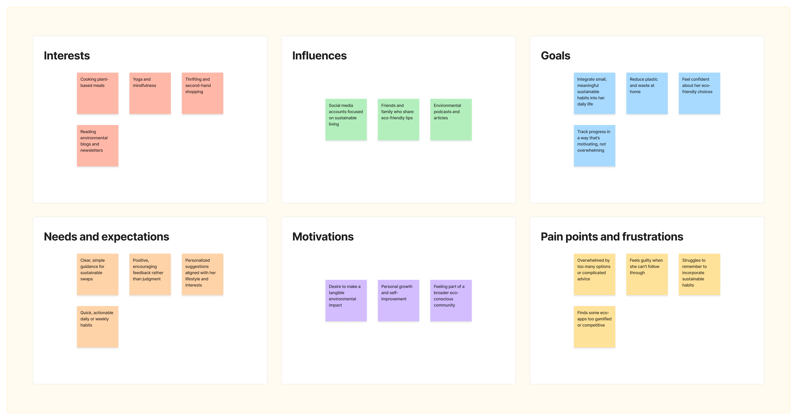
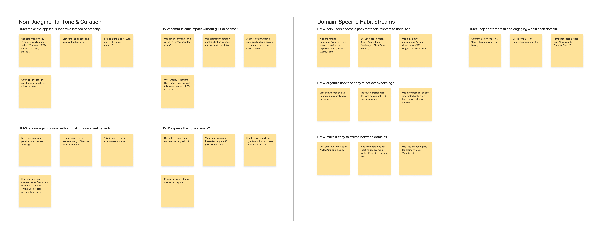
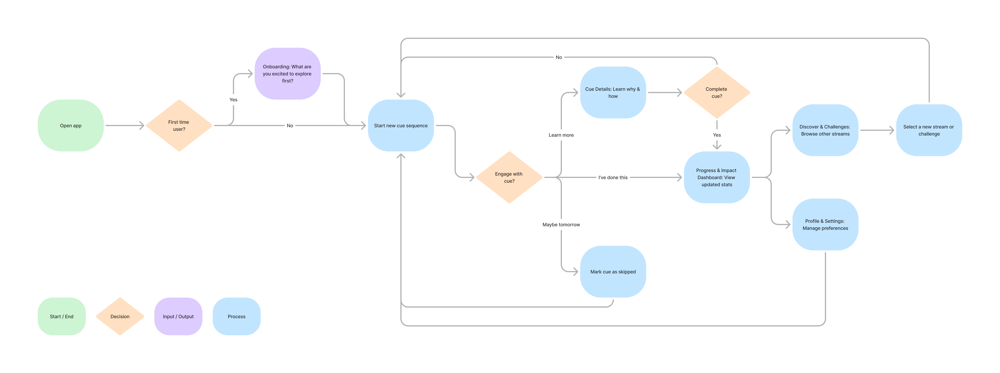

Designing a gentle, easy-to-use app that helps users build personalized micro-habits for sustainable living, making eco-friendly choices simple and encouraging daily progress.
Project Overview
GreenCue App Interface
The Challenge
How might we empower people who want to live more sustainably but feel unsure where to start?
Project Goals
- Make eco-friendly habits feel simple and accessible.
- Provide personalized, relevant suggestions to foster real change.
Research & Ideation
Competitive Analysis
Studied apps like Ailuna, JouleBug, and Oroeco to understand habit nudges, gamification, and impact tracking, as well as platforms like Olio and Too Good To Go for community and real-world motivation.
Key Insights
- Small actions matter: Tiny, specific swaps make sustainable behavior seem doable.
- Tone matters: Users resist judgment and shame—what works is positive framing.
- Personal relevance: Engagement is strongest when content aligns with user interests (e.g., plastic-free, energy savings).

User Persona
To anchor my design decisions, I created a user persona representing my target audience.
Maya Thompson
Maya is a 28-year-old marketing associate who wants to live more sustainably but often feels overwhelmed by choices and conflicting advice. She’s motivated by making small, meaningful changes, appreciates personalized guidance, and responds positively to encouraging, non-judgmental feedback.
Key Insights
- Needs simple, actionable habits rather than complex plans.
- Responds best to gentle, positive reinforcement over guilt or competition.
- Prefers personalized habit streams aligned with her lifestyle and interests.
- Values visual cues like progress tracking and impact feedback that feel motivating but not overwhelming.


User Journey Mapping
To better understand Maya’s interactions with GreenCue, I created a user journey map charting her emotional state, actions, goals, and pain points across five key stages: awareness, consideration, acquisition, service, and loyalty.
The map revealed that Maya’s engagement is strongest when the app feels personal, supportive, and flexible—and weakest when she feels guilt, overwhelm, or choice overload. These insights directly informed GreenCue’s non-judgmental tone, domain-specific habit streams, and gentle progress tracking.

Ideation / How Might We?
To translate research insights into design opportunities, I conducted a “How Might We” brainstorming session, focusing on two core areas:
- Non-Judgmental Tone & Curation
- How might we make the app feel supportive instead of preachy?
- How might we communicate impact without guilt or shame?
- How might we encourage progress without making users feel behind?
- How might we express this tone visually?
- Domain-Specific Habit Streams
- How might we help users choose a path that feels relevant to their life?
- How might we organize habits so they’re not overwhelming?
- How might we make it easy to switch between domains?
- How might we keep content fresh and engaging within each domain?

User Flow & Core Screens
Based on Maya’s journey and the insights from our "How Might We" sessions, I designed a core user flow to guide her through GreenCue. The flow is built to feel intuitive and supportive, ensuring she can easily find and complete her daily micro-habit without friction or guilt. The flow diagram below illustrates Maya's primary path, from initial personalization to daily engagement and progress tracking.
Core Screens
Here is a look at the essential screens that make up the GreenCue experience:
- Onboarding: The journey begins with a conversational question, allowing Maya to choose her "first step" and personalize her experience from the start.
- Daily Cue: The home screen presents a single, manageable micro-habit for the day with positive reinforcement.
- Cue Details: This screen provides helpful context and tips in a gentle, non-judgmental tone, explaining the "why" and "how" behind each action.
- Progress Dashboard: A visual dashboard that celebrates completed habits and showcases cumulative impact, reinforcing positive behavior without focusing on missed days.
- Discover: A space for Maya to explore new habit "streams" or challenges when she feels ready to try something new.
User Flow Diagram

Core Concepts & Design Principles
GreenCue is:
- Gentle, encouraging, and non-judgmental.
- Domain-diverse—users choose a track (e.g., Plastic-Free, Sustainable Food) to tailor their daily micro-habits.
- Frictionless—designed with low cognitive load and simple interactions.
GreenCue is not:
- Judgy or guilt-inducing.
- One-size-fits-all.
- Overly data-heavy or analytical.